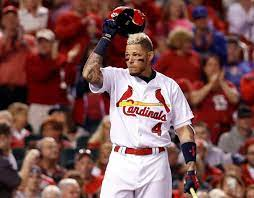
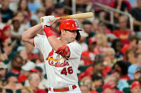
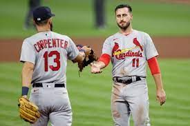
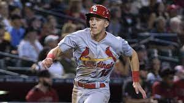
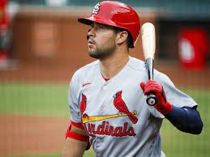
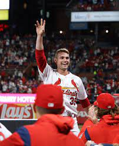
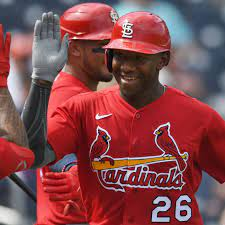
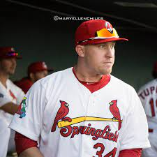
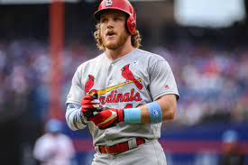

Near the end of January, Cardinals fans were getting restless. The team declined Kolten Wong's team-friendly 12 million dollar option, and appeared as though it would head into the regular season without making any significant aquisitions. Then, out of the blue on the last Friday of the month, some media started reporting that a Cardinals/Rockies trade was very close. By Friday night, arguably the best third baseman in the league wore the Birds on the Bat. Of course, a baseball team can't win on the strength of one player alone, and a lineup can't score runs with only one good hitter, so let's take a look at how the Cardinals position players are looking heading into the season.
The Infield
Because this is where the hype lies, let's start with the infield group. And naturally, the conversation has to start with Nolan Arenado.
So how good is he? Well, if you take out his two worst seasons (his rookie year and 2020, when he was injured), he averages about 35 wRAA (weighted run above average, or about how many runs above average he is responsible for) and an excellent 0.383 wOBA (Weighted on-base average; basically OPS but more accurate. A 0.320 wOBA is considered average). The dude can rake. But what's more thrilling is that his defense is the most elite part of his game. He has 8 gold gloves and 3 platinum gloves.
This is the kind of thing that he does:
We're more familiar with the rest of the infield, as they are all returning players. At catcher is future hall-of-famer, Yadier Molina. Shortstop is manned by Paul Dejong, 1st base by Paul Goldschmidt, and Tommy Edman will likely be the starting 2nd baseman out of camp. Paul Goldschmidt is of course an offensive and defensive stud in the same vein as Arendao. Dejong has been nominated for the gold glove at shortstop and Tommy Edman is said to play above-average (at least) defense at second. There shouldn't be many seeing-eye hits against the Cardinals this year. Offensively, there are some quesiton marks. Molina is on the downside of his career, but though his power is gone, he can still poke a ball over the fielder's head for a single or get the ball deep to drive in a runner from third with lass than 2 outs. Paul Dejong is about an average hitter by Fangraphs wOBA and wRC+ (weighted runs created adjusted for external factors), which isn't bad for a defensively-sound shortstop. The real enigma, however, is Tommy Edman. In 2019, Tommy Edman had 0.357 wOBA and 123 wRC+ (23% better than league average), but he slumped massively in 2020 with a 0.302 wOBA and a 90 wRC+. Of course, 2020 is the freak COVID season, so how much of that do we hold against him? Only time will tell how good Tommy Edman is, so he's a player to keep a close eye on this season.




The Outfield
I find the outfield very interesting this year. The Cardinals sent Dexter Fowler off to the Angels, retaining most of his salary, and in doing so have opened up another spot to get a look at the young players that have been knocking on the door for years. Harrison Bader, the Cardinals main-stay in center field, will miss the first month of the season with a forearm injury. So that means that some combination of Tyler O'Neill, Lane Thomas, Dylan Carlson, Justin Williams, and John Nogowski(!!!) will open the season as the starting outfielders. Fans have had questions about the Cardinals' outfield prospects for years, and they're finally about to be answered. When given consistent opportunities, will Tyler O'Neill be able to hit? What about Lane Thomas? Justin Williams was a higher-level prospect from Tampa Bay and has hit well in the minors; what can he do?
John Nogowski has shown the ability to hit (albeit without power). The reason he hasn't cracked the beleaguered Cardinals lineup in the past is that he only plays first base, and Paul Goldschmidt isn't going anywhere. If Nogowski can actually learn the outfield, he would be a very intriguing option, especially at the top of the Cardinals lineup, as there does not currently seem to be a capable leadoff hitter on the team.
Of course, the most intriguing player in the Cardinals' outfield is Dylan Carlson, of whom Cardinals' President of Baseball Operations John Mozeliak famously said "[other teams] will have to pry him through my dead hands." Carlson stung the ball last year, posting Hard Hit% numbers similar to George Springer, Frasisco Lindor and Mookie Betts. His Barrel% and Sweet Spot% are up there with some of the best, as well. With his first season in the majors under his belt, this should be a big year for him.
The likely opening-day outfield for the Cardinals will be: Tyler O'Neill in left, Dylan Carlson in center, and Lane Thomas in right. Lane Thomas can play center competently as well, so he might play there. However the Cardinals piece it together, this is shaking out to be an interesting and entertaining season.





